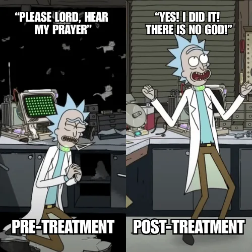
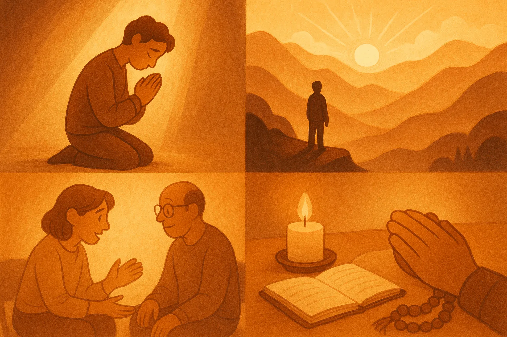

Before anything else on this page — if the word "spirituality" already has you bracing, that response is completely valid and this page is still for you.
For some people, religion wasn't a refuge. It was part of the trauma. Shame dressed up in scripture. Conditional love with a theological justification. Communities that offered belonging and then revoked it when you needed it most. If that's your history, not one part of this page is going to tell you that the path back to healing runs through the thing that hurt you. It doesn't have to. That pain deserves acknowledgment before any talk of faith can feel safe — and your healing doesn't require resolving that question first.
This page is also for the person who simply isn't there yet — who finds the God conversation exhausting, who sat in a meeting watching people talk about their Higher Power and felt nothing except the quiet suspicion that something was wrong with them for not feeling it too. Nothing was wrong with you. Authenticity can't be rushed, and faith that's assigned rather than discovered tends not to hold when things get hard.
I've sat in those rooms myself — AA, NA, CA, CMA, — during a period when I had deliberately kept my own faith on the sidelines. I've watched the faces of newcomers when the conversation shifted toward God. Not with judgment. With recognition. That look of quiet desperation — of someone trying to make something fit that that didn’t fit — stays with you.
Whatever you eventually call your anchor — prayer, meditation, nature, music, poetry, the group itself, a doorknob, or nothing with a name at all — it lands deeper and holds longer when it's genuinely yours. Not assigned. Not pressured. Not part of a program's curriculum. Chosen. On your own terms. In your own time.
I genuinely believe it's possible to make meaningful, lasting progress in recovery before spirituality enters the picture — or without it ever entering the picture in any traditional sense. I say that because I've done it. For a long time my foundation was built on trauma work, education, and honest effort. I didn't reject faith — I kept it at a distance until I was ready to engage with it on my own terms. What I found when I got there was something that actually held. But that's my story, not a prescription.
Some will argue that the 12 Steps — and specifically the "Higher Power" component — is where spirituality belongs in recovery. I understand that argument, and I've seen it work for people. But there's a difference between spirituality as a curriculum and spirituality as a calling. One is assigned at intake after a drug test. The other arrives on its own terms. Those aren't the same thing — and for many people, especially those with trauma woven into their religious history, treating them as interchangeable does real harm.
What tends to hold — across wildly different belief systems, across every flavor of faith and non-faith — is the connection you arrive at honestly. God, Buddha, Jehovah, nature, the group, the music, the poems, the silence, the stars — the form matters far less than the honesty behind it. Half-hearted belief assigned under pressure rarely survives contact with real life. What's genuinely yours usually does.

*Dialogue paraphrased and screenshot modified for commentary purposes. This material is used solely to illustrate a behavioural pattern in the context of addiction recovery education — not to reproduce, distribute, or substitute for the original work. All rights remain with the respective copyright holders.
That flip isn't just humor. Urgency, submission, appeal — then the moment passes, and it's dismissed just as fast. That's what belief looks like when it's being used as a coping strategy rather than something genuinely held.
I've watched this exact pattern in recovery settings. The desperation is real — on your knees, bargaining for relief. And when the pressure lifts, the belief goes with it.
If you've ever promised anything just to get out of a moment — and walked it back once you felt safe — you've felt this.
Spirituality grabbed as a bargaining chip rarely transforms anyone. What tends to last is what's chosen freely, lived consistently, and integrated honestly with everything else you're building. Whatever that looks like for you — that's the version worth finding.
Over time I started noticing a pattern. People found meaning through wildly different paths — God, Buddha, nature, music, meditation, poetry, community, service, silence — and so many of them landed in similar places: peace, resilience, a renewed sense of direction. That made me curious. Not about which belief was correct — but about what they all had in common. What was the thread underneath all of it that actually moved people forward?
That question is what the rest of this page is about. Not which path is right. What all the paths that work seem to share.
If the word spirituality still makes you roll your eyes — good. Keep that instinct. Don't adopt a framework that doesn't fit just because someone said you should. Instead, treat this like an experiment. You're not pledging allegiance to anything. You're running a test on what actually helps and paying attention to the results.
Step outside tonight and stare at the stars for five uninterrupted minutes. Or watch a documentary about the deep ocean or the universe. The goal isn't belief. It's awe — the specific feeling of being genuinely small in something enormous. That feeling does something to the noise inside.
Notice where you feel even a flicker of resonance. A meeting, a trail, a piece of music, a conversation that felt real for once. Go back to that place or that thing — consistently, without needing to explain why. Consistency is what turns a flicker into something you can rely on.
Build your own collection of things that remind you change is possible. Quotes, lyrics, poems, passages — whatever has ever made you feel like the story isn't over. Keep them somewhere visible. Return to them when the narrative in your head starts running in the wrong direction.
Pick one small, repeatable thing and do it the same way every day. Make coffee mindfully. Light a candle before journaling. Three slow breaths before starting the car. It doesn't need a name or a theology. It just needs to be yours — and to happen consistently enough that your nervous system learns to expect it.
You don't have to call any of this spirituality. Call it perspective, sanity, or just "the thing that helps me not fall apart." The name is entirely optional. What matters is whether it's working — and whether it's genuinely yours.

I'll be honest about where I land personally — not to push you anywhere, but because this page would be incomplete without it. I'm a follower of Christ. That's not a footnote or a disclosure. It's a real part of who I am and how I understand the world.
But I didn't bring God into my recovery right away — and that was a deliberate decision. Not because I'd lost faith. Because I was afraid of what I'd do with it if things fell apart again.
I'd watched it happen enough times to recognize the pattern: someone enters treatment desperate, reaches for God in the wreckage, and builds their early recovery on that foundation. Then the rubber hits the road — a relapse, a crisis, a moment where prayer doesn't seem to change anything — and the anger that was always looking for somewhere to land finds it. They don't just leave the program. They leave God. And they end up further from both than when they started.
I didn't want that to be my story. So I made a quiet decision: do the work first. Build recovery on trauma healing, education, and honest effort. Get stable enough to engage with faith from a place of strength rather than desperation. Then bring God back in — when it could be real, not just a lifeline grabbed in a storm.
What I found on the other side of that was something I couldn't have manufactured under pressure: a faith that wasn't contingent on my circumstances. One I'd chosen with a clear head, not clutched in a moment of panic. That distinction turned out to matter more than I expected.
I'm not telling you that's the right sequence for you. It might not be. Some people find God in the middle of the worst moment of their life and it holds — genuinely, durably, for decades. I've seen that too and I wouldn't minimize it for anything.
What I'm saying is that for me, keeping faith out of my recovery long enough to build something real underneath it made the faith itself more real when it returned. Recovery didn't depend on God. But what I found in recovery made me understand God differently — and that understanding has stayed.
A note for those who know their Scripture: I'm aware this isn't the sequence God instructs. He doesn't ask us to get stable first and bring Him in later — He meets us in the depths, and that's where He wants to be invited. I know that. But that relationship was too precious to me to risk on the version of myself that was still in crisis. I'd seen what happens when faith becomes a casualty of a bad night, and I wasn't willing to put it in those hands — mine, when things were at their worst. So I made a careful, considered choice to protect it until I could show up to it differently. They don't call it wrestling with God for nothing. I'm not suggesting it was the right call for anyone else. But it was a hill I was prepared to die on — and looking back, I believe it was honored.
So this page isn't a pitch. I'm not here to hand you a belief system or suggest you'd be doing better if you had one. The research is clear that perspective, connection, hope, and a regulating anchor help people heal — and those things can live inside faith or entirely outside of it. You get to decide what that looks like.
What I hope — and I'll just say it plainly — is that somewhere in this site, in the way it's written and what it cares about, you might catch a glimpse of something that makes you curious. Not about recovery. About what's underneath it. About what could be waiting on the other side of all this work.
That curiosity is yours to follow wherever it leads. I'm not in charge of the destination.
Follow the next step in order, or branch out into related topics.